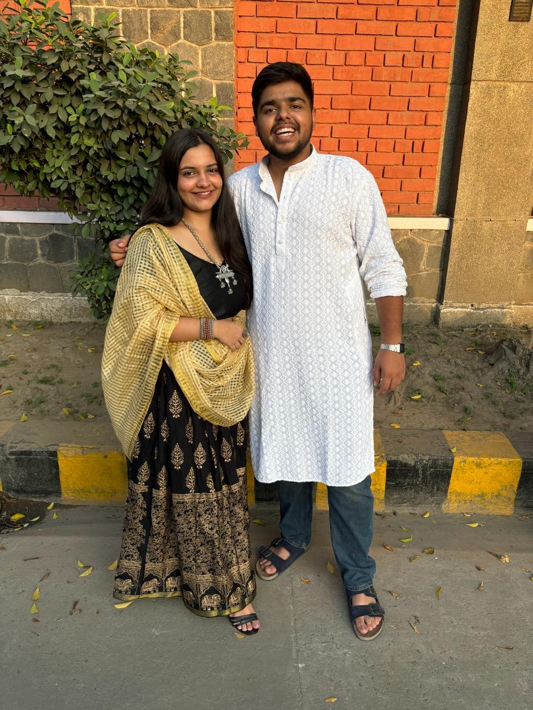
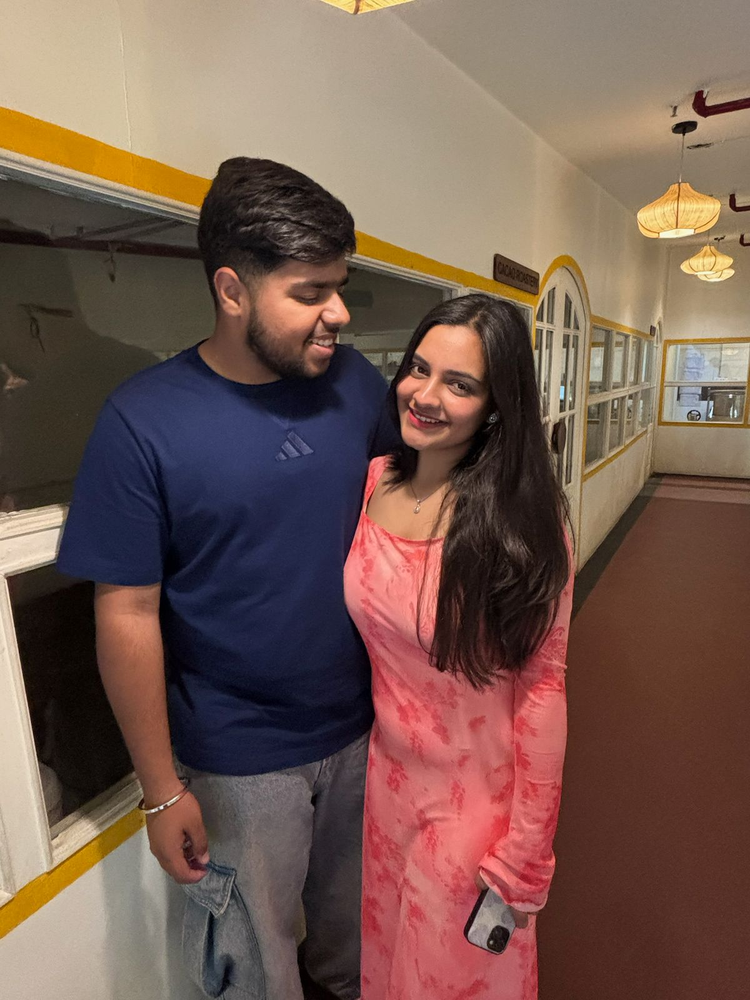
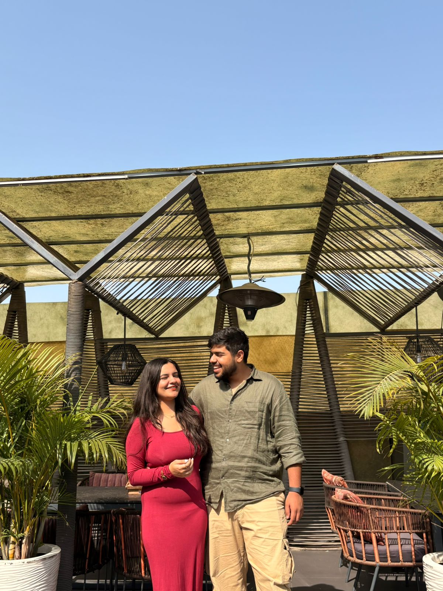
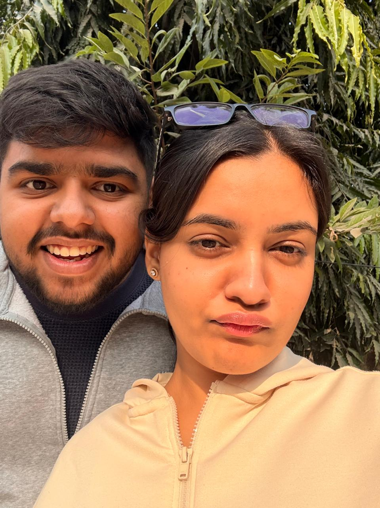
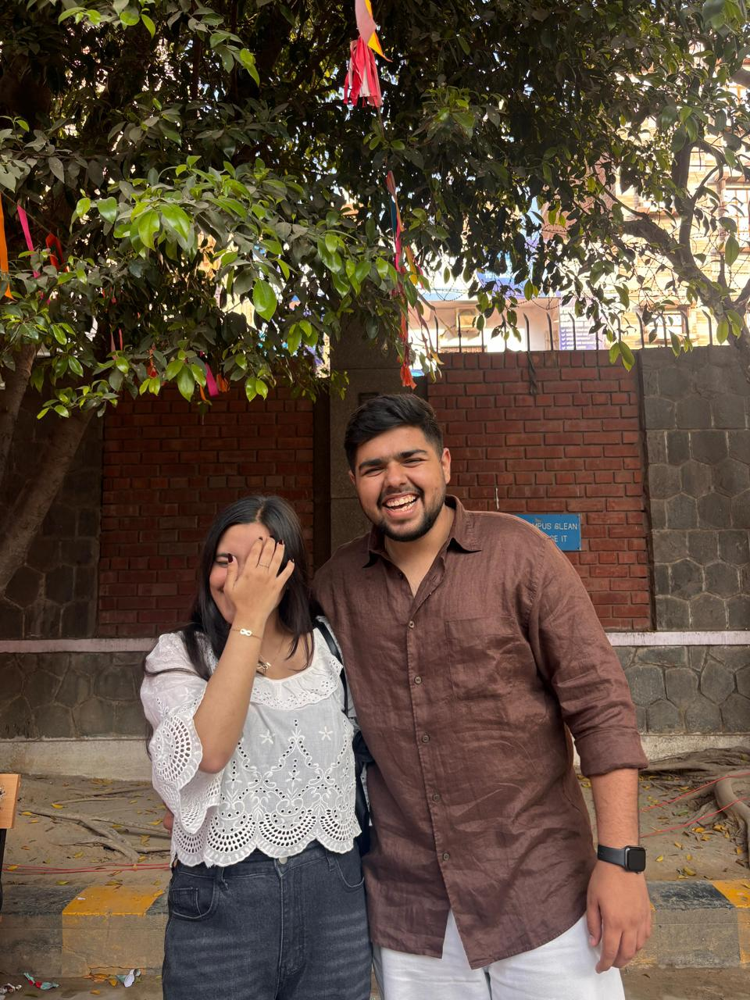

First, the truth
This isn't about one missed anniversary. It's about the person I haven't been these past few months.
I forgot to show up the way you deserved, not only on our anniversary, but over these last few months. You told me, more than once, that it felt like I'd drifted, that you weren't getting enough of me. You were right, and I'm reallyy sorry.
I'm not writing this to explain it away or to make you feel bad for being hurt. You get to be hurt. I just want you to know I finally understand what I did, and that I looked straight at it instead of past it.
The day I let slip by
May 25, the day it began
happiesttt anniversaryy meri jaan🥺. A little late, and said the way I should have said it the first time: I'm glad it's you. 13 months ago I got something I didn't know how to deserve yet, and everyday i just thank god that i've got you.
How we got here
Us, in order.
-
November 2024
The first time. we started talking properly, and i just couldn't control my heart when you looked at me, the way you talked to me, the way we had our conversations, the way you listened to me blabber.
-
March 2025
Our first "us" moment. I confessed to you in metro, i told you everything that was going on, and everything took a big turn, your every action started affecting me and for the first time i felt the true love
-
25th May 2025, 01:20 am
The Big Day. when my life changed completely and i became the luckiest person in the entire universe, i had never been loved the way you loved me, you became my world
-
April-June 2026
Past few months. last few months have been the hardest, we've had numerous disagreements and misunderstandings and we've never left each other's side. I've done loads of mistakes and there isn't a day i don't regret, i'm really sorry babyy, i'll never stop working on us.
-
, 5 July 2026
Me, trying to do better. Which is where this page comes in.
Moments I'll never forget.
A few of the ones I keep.

your photo →img1.jpeg

your photo →img2.jpeg

your photo →img3.jpeg

your photo →img4.jpeg

your photo →img5.jpeg
img6.jpeg
even when i wasn't showing up
the things i never stopped noticing.
i wasn't as present as i should've been. but i want you to know i never stopped watching, never stopped keeping the little things about you.
- the way you laugh at my unfunny jokes.
- how you take care of me even if we've had a fight.
- the way you notice that i'm looking at you and then you blush.
- how you remember always asking if i've had my food.
- the way you sleep on my shoulder and it makes me feel like the most luckiest and loved person in the world.
i noticed all of it. i just went quiet about saying it out loud. i won't anymore.
If I had one more chance
If I could do our 13th month anniversary again.
I'd wish you before the day even began. I'd remind you how grateful I am for every month we've spent together and how lucky I still feel that you're the person I get to love.
I'd still prepare your Emma interview documents. I'd still spend hours making sure you walked into that interview feeling confident because seeing you succeed makes me genuinely happy. But I'd make sure that, through all of it, you never had to wonder whether I remembered us.
I can't go back and change that day. I can't erase the hurt I caused or the disappointment you felt while waiting for something that should've come from me without a reminder. But I can make sure that the next chapters of our story are written differently, not because I promised they would be, but because I choose to make them different every single day.
Say the quiet things
Letters, if you want them.
Open these in any order, or not at all. There's no right way to read them.
iWhat I actually didopen
I spent a lot of time thinking about where everything started slipping, and I realised it wasn't just one forgotten anniversary. It was all the little moments before that. Somewhere along the way, I became so occupied with work, responsibilities, travelling, trying to improve myself and figuring life out that I unknowingly stopped giving enough of myself to the person who mattered the most. I never stopped loving you, but I stopped showing that love in the way you deserved to feel it. You kept telling me that my priorities had changed. Every time, I thought, "No, she's still my biggest priority." But if the person you love keeps feeling that way, then somewhere your actions are saying something different from your heart. That's on me. The anniversary wasn't painful because I forgot a date. It was painful because I made you feel like something that mattered deeply to you had slipped from my mind. You shouldn't have had to wait for a wish. You shouldn't have had to remind me. That memory should have lived in my heart before it ever needed to live in my calendar. I'm not writing this to defend myself or to tell you how guilty I feel. I'm writing this because I finally understand what you were trying to tell me these past few months, and I'm truly sorry that it took me this long to understand it.
iiWhat I imagine it felt likeopen
I don't know exactly what was going through your heart, but I've been trying to imagine it. Maybe it felt like you were slowly becoming someone who had to ask for my time instead of naturally receiving it. Maybe every time I got busy or distracted, it made you wonder whether I still remembered the little things that used to make us... us. Maybe when our anniversary passed without a word from me, it wasn't just disappointment. Maybe it confirmed a fear that had already been growing inside you, that you weren't getting the same Yuri anymore. When you told me, "If I wouldn't have said anything, ten days would've passed and you still wouldn't have remembered," that sentence has been replaying in my head ever since. I can't imagine how lonely that must have felt. And even after you told me you were hurt, I kept talking about how guilty I was instead of simply sitting with your pain. Looking back, I realise that wasn't what you needed from me. You needed me to understand you first. You have every right to feel hurt. I don't want to take that away from you. I just hope that one day, through what I do from here, those feelings become memories instead of your reality.
iiiWhat I want the next months to beopen
Even during the months where I wasn't being the boyfriend you deserved, there was never a single day where I stopped noticing you. I notice how you always worry about whether I've eaten, even when you're upset with me. I notice how you keep telling me to sleep on time, take care of myself and stop being so harsh on my own body. I notice the excitement in your voice whenever something good happens to me, and how genuinely happy you become for my smallest wins. I notice how much effort you quietly put into us without making noise about it. Like making something for our anniversary and waiting because you wanted me to remember on my own. Reading that broke my heart, because I realised how much love was sitting there waiting for me, and I wasn't there when it needed me. You once promised me that no matter how hard things got, we'd always choose each other. You kept that promise, even through all these misunderstandings. Now it's my turn. Not by saying "I'll change" a hundred more times. Not by asking you to forgive me because I made this website. But by making sure that months from now, when you think back to this moment, you remember it as the point where I finally started becoming the person you always believed I could be. I love you, Gugluu. I always have. And now, more than anything, I want my actions to become worthy of those words.
Something I never thanked you for
Thank you for choosing us.
Looking back, I realised something. Every time something hurt you, you didn't quietly walk away. You told me. You tried to make me understand. Even when we argued, even when you were disappointed, you still chose to have those difficult conversations because somewhere in your heart, you still believed we could become better.
I know that wasn't easy. It would've been much simpler to stop caring, but you didn't. You stayed, you explained, you forgave me more times than I deserved, and you kept hoping I'd understand what you were trying to tell me. You always wanted the best for me, even on the days when I wasn't being my best for you.
Thank you for not giving up on us when things became difficult. I don't see that as something I'm entitled to, I see it as one of the biggest acts of love you've ever shown me. I only hope that, from here onwards, I become someone who makes that choice feel worth it.
Words are easy, so here's the plan
Small things. Every day.
I wanted to make this because you deserve every bit of effort I can give. But I also know this page isn't what will rebuild your trust. The real apology starts after this page ends. These aren't promises I expect you to believe today, they're the little things I want you to see through my actions, every single day.
- 01 You should never have to remind me of the moments that belong to us. Our anniversaries, your important days, your interviews, your achievements, the little milestones we create together, I want you to feel remembered because I remembered, not because you had to remind me.
- 02 You won't have to compete with everything else in my life. Work, projects, travelling, college, responsibilities... all of them matter. But none of them should ever make you feel like you've become second. If life gets busy, I'll communicate instead of disappearing.
- 03 I'll listen before I explain. One of my biggest mistakes has been trying to explain myself before fully understanding what you were feeling. I want my first response to be listening to you, not defending myself.
- 04 Love will be shown in the little things. Not only on anniversaries or through surprises like this. Through everyday conversations, remembering the little things you tell me, making time for us, and making sure you never have to question where you stand in my life.
- 05 You don't have to believe these words today. Trust shouldn't come back because I wrote this page. It should come back only if my actions quietly prove these words right over time. That's the only way they'll ever mean anything.
I don't expect this page to make everything okay. I only hope that one day, when you look back at today, you'll remember it as the day I stopped making promises and started becoming the person I always wanted to be for you.
One last thing
Thank you.
I'm not asking you to forgive me today, tomorrow, or because of this page. I just wanted you to know that I finally understood what you've been trying to tell me all these months.
If one day you feel my actions have become worthy of your trust again, that'll mean more to me than anything I could ever write here.
Thank you for loving me, even on the days when I made it difficult.
You once told me that love should get better with time.
Somewhere along the way, I forgot that.
From today, I want my actions to remind you.
Happiestttt 13 months, gugluu. ❤️💍, thankk youu for staying with me always🥺🥺